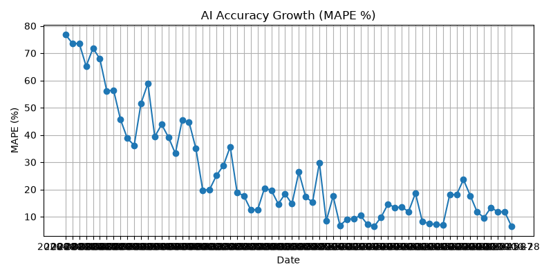

Self-Learning Osaka Weather AI
今日の 24時間 予報
大阪 天気予報
| Time | Temperature | Precipitation Probability | Weather |
|---|
| 2026-10-22T11:00 | 21.3°C | 0% | Overcast |
| 2026-10-22T12:00 | 20.0°C | 0% | Overcast |
| 2026-10-22T13:00 | 21.8°C | 0% | Overcast |
| 2026-10-22T14:00 | 20.8°C | 0% | Overcast |
| 2026-10-22T15:00 | 21.1°C | 0% | Mainly clear |
| 2026-10-22T16:00 | 22.1°C | 0% | Partly cloudy |
| 2026-10-22T17:00 | 19.2°C | 0% | Overcast |
| 2026-10-22T18:00 | 20.0°C | 0% | Mainly clear |
| 2026-10-22T19:00 | 17.5°C | 0% | Mainly clear |
| 2026-10-22T20:00 | 16.3°C | 0% | Partly cloudy |
| 2026-10-22T21:00 | 16.4°C | 0% | Overcast |
| 2026-10-22T22:00 | 16.5°C | 0% | Mainly clear |
| 2026-10-22T23:00 | 15.5°C | 0% | Partly cloudy |
| 2026-10-23T00:00 | 16.7°C | 0% | Overcast |
| 2026-10-23T01:00 | 14.7°C | 0% | Partly cloudy |
| 2026-10-23T02:00 | 15.6°C | 0% | Partly cloudy |
| 2026-10-23T03:00 | 15.4°C | 0% | Overcast |
| 2026-10-23T04:00 | 16.3°C | 0% | Overcast |
| 2026-10-23T05:00 | 16.4°C | 0% | Partly cloudy |
| 2026-10-23T06:00 | 16.4°C | 0% | Overcast |
| 2026-10-23T07:00 | 17.6°C | 0% | Partly cloudy |
| 2026-10-23T08:00 | 17.7°C | 0% | Overcast |
| 2026-10-23T09:00 | 19.6°C | 0% | Overcast |
| 2026-10-23T10:00 | 20.4°C | 0% | Overcast |
直近の完了済み気象データ
| 時間 | 気温 | 降水 |
|---|
| 00:00 | 22.5 | 90% |
| 01:00 | 22.8 | 73% |
| 02:00 | 23.1 | 49% |
| 03:00 | 21.8 | 33% |
| 04:00 | 21.8 | 33% |
| 05:00 | 22.6 | 41% |
| 06:00 | 21.2 | 47% |
| 07:00 | 21.2 | 47% |
| 08:00 | 23.1 | 45% |
| 09:00 | 25.7 | 41% |
| 10:00 | 27.3 | 32% |
| 11:00 | 28.1 | 22% |
| 12:00 | 28.8 | 20% |
| 13:00 | 28.5 | 35% |
| 14:00 | 28.4 | 58% |
| 15:00 | 27.9 | 76% |
| 16:00 | 26.1 | 84% |
| 17:00 | 25.8 | 86% |
| 18:00 | 23.9 | 88% |
| 19:00 | 23.1 | 93% |
| 20:00 | 22.0 | 97% |
| 21:00 | 21.5 | 90% |
| 22:00 | 20.5 | 63% |
| 23:00 | 20.1 | 27% |
| 00:00 | 19.7 | 0% |
| 01:00 | 19.4 | 0% |
| 02:00 | 19.1 | 0% |
| 03:00 | 18.4 | 0% |
| 04:00 | 18.0 | 0% |
| 05:00 | 17.5 | 0% |
| 06:00 | 17.1 | 0% |
| 07:00 | 16.8 | 0% |
| 08:00 | 18.0 | 0% |
| 09:00 | 19.8 | 0% |
| 10:00 | 21.1 | 0% |
誤差（完了観測 vs 事前予測）
MAE: 4.092 / MAPE: 17.71%
| 温度誤差 (°C) |
|---|
| 7.70 |
| 6.80 |
| 6.50 |
| 7.10 |
| 5.70 |
| 5.20 |
| 5.40 |
| 5.30 |
| 4.50 |
| 5.10 |
| 5.00 |
| 5.10 |
| 4.20 |
| 4.60 |
| 4.30 |
| 4.40 |
| 3.00 |
| 2.60 |
| 2.20 |
| 0.90 |
| 1.00 |
| 0.10 |
| 0.90 |
| 0.60 |
AI 成長グラフ（MAPE履歴）
